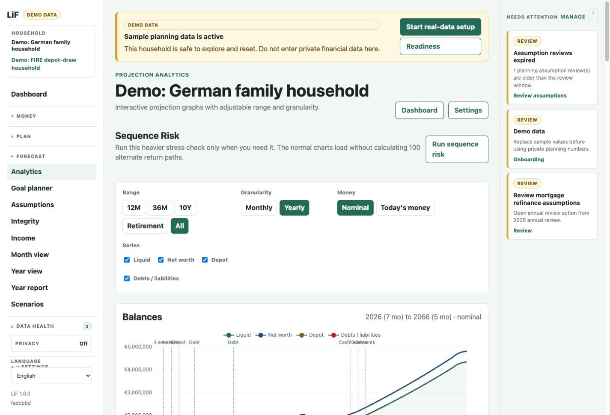
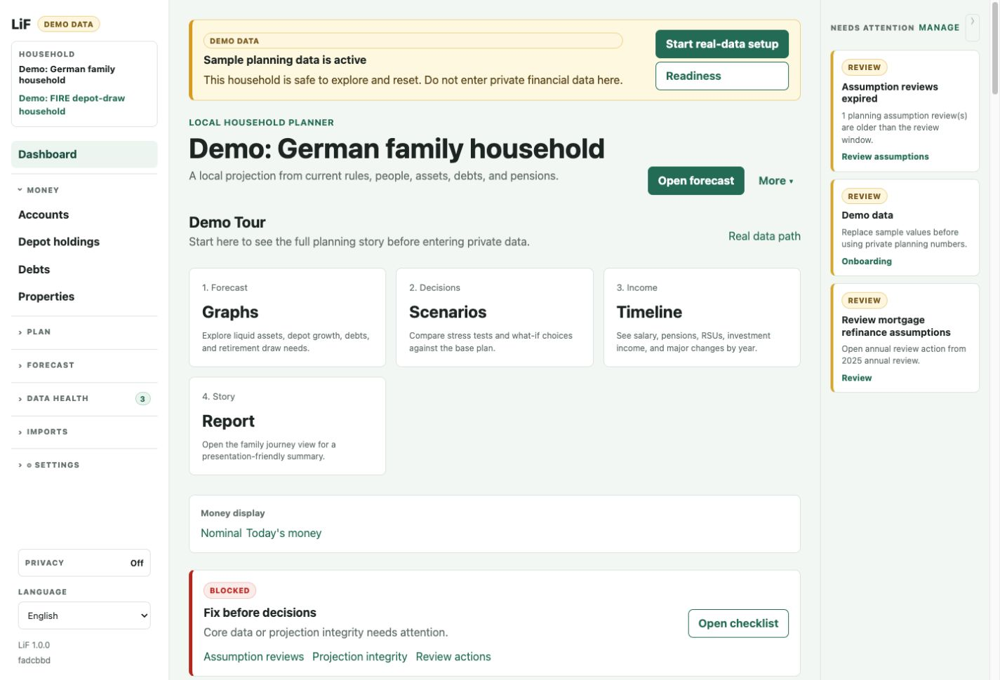
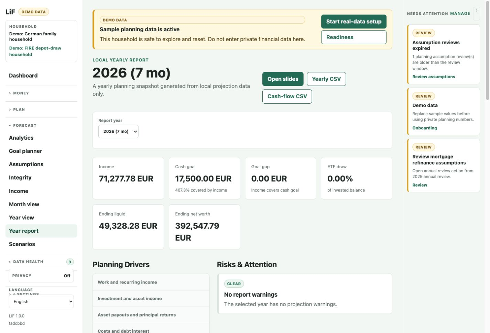

Family and income
Adults, children, Kindergeld-style income, salaries, bonuses, RSUs, salary changes, and milestones as children grow up.
Local-first planning for German households
LiF helps you model household cash flow, depots, mortgages, pensions, gifts, children, real estate, and retirement scenarios over decades. It runs locally, starts with synthetic demo data, and keeps the numbers auditable.

What it is
Budgeting tools are good at today. LiF is for the next year, five years out, kids growing up, mortgage decisions, depot drawdowns, inheritance planning, and retirement. It turns a household model into yearly and monthly projections you can inspect instead of trusting a black box.
What it models
Adults, children, Kindergeld-style income, salaries, bonuses, RSUs, salary changes, and milestones as children grow up.
Cash, savings, depots, child-owned assets, bonds, distributions, planned purchases, and transfers between accounts.
Mortgages, fixed-interest periods, refinance assumptions, private loans, property ownership, and transfer planning.
German statutory pension-style assumptions, private pensions, FIRE cash goals, scenario clones, reviews, and confidence checks.
Screenshots


Local-first promise
Quick start
LiF is a Django app. Clone it, install the locked dependencies, migrate, seed the synthetic demo, and open it in your browser.
git clone https://github.com/lif-planner/lif.git
cd lif
pipenv install
pipenv run python manage.py migrate
pipenv run python manage.py seed_demo
pipenv run python manage.py runserver 127.0.0.1:8000Project status
LiF 1.0 is the first public release. It is useful for experimentation and self-hosted planning, but it is not financial advice. German language support, reporting, imports, and UI polish will keep improving in public.
Read the roadmapAI-assisted project
LiF was built largely with AI-assisted coding under human product direction and release decisions. That history is public on purpose: financial planning logic should be tested, auditable, and treated as planning support rather than financial advice.
Please read
LiF is a hobby project, built and maintained in spare time. We do our best to get the numbers right, but the software may contain bugs, edge cases, or missing calculations, and is provided without warranty of any kind. Use it at your own risk. Nothing here is financial or tax advice -- if you're unsure about a decision, consult a qualified financial or tax advisor.